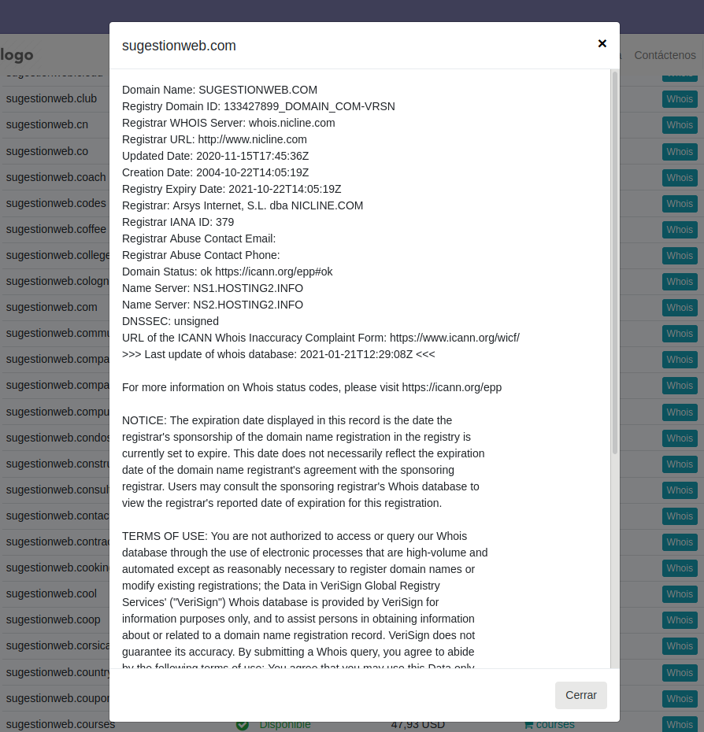

Includes a Widget "Whois" that you can add to any page.
It comes pre-configured to use 1,250 Domain Extensions and 1,000 Whois servers. Everything, servers and TLDs are stored in the database and you can manage them with the standard Odoo tools. You can add, delete or modify Servers, TLDs and more.
Fast response mechanism with asynchronous supporting for concurrent querys to many servers. You can check domains names for hundreds of tlds.
Sell the available domains as an ODOO product in your own store and increase your profits as well as build customer loyalty.
The program not only detects if the domain is free or already registered, it also presents the result of the whois query made, showing information about the domain. A record of each query made, date, time and result is kept for marketing or analysis tasks under the Logs Menu in backoffice.
Each domain extension is linked to a product and, if the domain is available, it can be purchased.
You can manage servers and Tlds and view the stored logs of queries. You can add new servers, tlds and rules for detection of free domains.